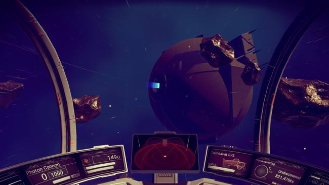

Randomly Generated Space VR Simulator Small Proof Of Concept Demo (Based on Class Notes)
For those who have ever wanted to travel the depths of space and explore the unknown, this simulator will be perfect for you! This VR simulator is aimed to emulator the experience of travelling in space and seeing all the vast wonders that it might hold. Each experience should be as unique as possible. Meaning that whatever you find will be different every single time you play the game, whether it be planets or life forms (Granted life forms may be a little to complex for this project, currently randomly generated planets may be viable)
Why Space?
Almost everyone is amazed at the wonders of space, and what's actually there for us. Virtual Reality opens up so many possibilities for people to experience the feel of actually being in a spaceship and traversing the unknown. Plus, adding true randomization makes travelling the unknown that much more exciting!
Inspiration:

The idea of having a randomzied space exploration experience comes from a video game called "No Man's Sky", where the player simply explores the universe, which is randomly generated. This means that people playing the same game can have completely different experiences. Due to the randomization, no two player experiences are alike. Each person sees unique planets that can have completely different environments with completely different lifeforms. Granted, the complex algorithms needed to procedurally generate these planets may be too complicated to implement within a few weeks, but our goal is to implement a smaller, more reasonable scale version of this.
Gameplay Flow
The flow of the game will be simple. The user will simply start out in the middle of space and be able to move in their ship. Surrounding them will be a group of procedurally generated planets. They are then free to move around the universe, and visit these planets, which will have a limited amount of life forms possibly. At the moment, there is no current goal as the main purpose is to simply explore and see what people can find. However, a goal similar to that of the original game can be implemented which is to reach the center of the universe.